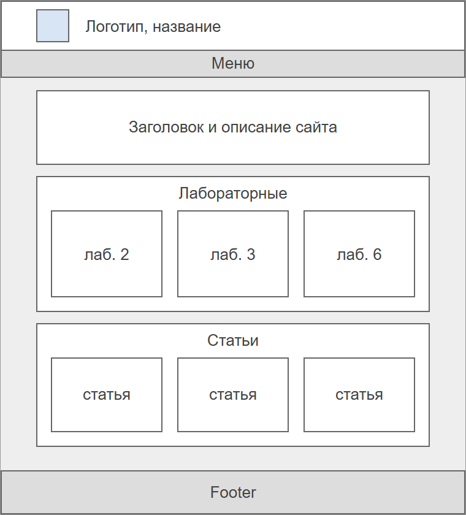
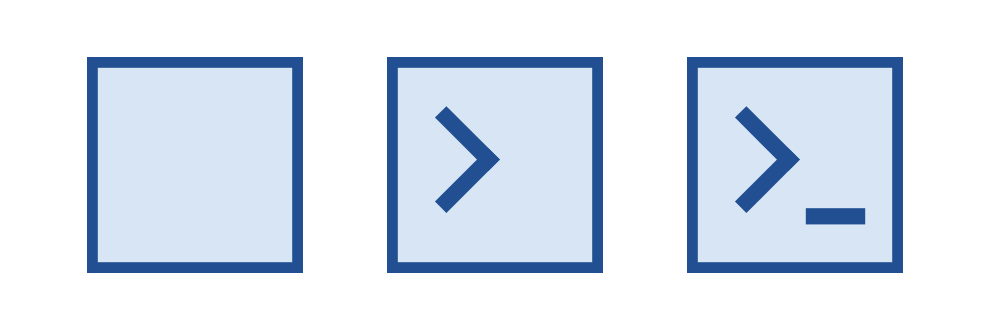
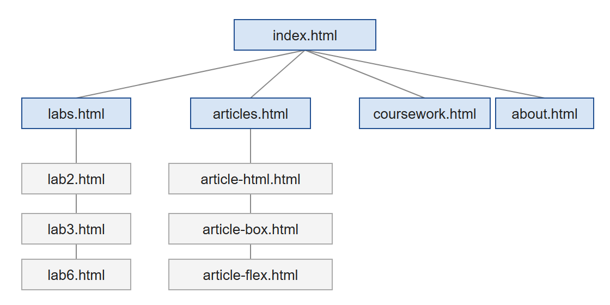

О сайте
DevSpace - это мой учебный сайт. На этой странице написано, как сайт устроен.
Макет и дизайн
Сначала были набросаны простые схемы главной страницы и страницы с заданием. Хотелось сделать сайт без лишних украшений, чтобы все внимание было на содержимом: светло-серый фон, белые блоки с тонкой рамкой и синие заголовки. На всех страницах есть одинаковые шапка с логотипом, меню и подвал, а внутри разделов добавлена строка навигации, чтобы было понятно, где вы находитесь.


Таблицы для верстки на сайте не используются. Общая раскладка сделана с помощью Flexbox, а картинки в статьях обтекаются текстом через float. На маленьких экранах блоки переносятся друг под друга, а картинки перестают обтекаться и занимают отдельную строку.
Логотип

Логотип сделан только средствами CSS, никаких файлов-картинок в нем нет. Его размер 40 на 40 пикселей. По смыслу это значок командной строки: уголок и подчеркивание, как будто программа ждет, что вы начнете вводить команду. Такой значок подходит для сайта про программирование.
Логотип состоит из одного элемента span и двух псевдоэлементов:
- сам
span- квадрат с голубым фоном и синей рамкой; ::before- маленький квадрат, у которого оставлены только две рамки, он повернут на 45 градусов и превращается в уголок;::after- узкий прямоугольник, который играет роль курсора.
Значок на вкладке браузера повторяет логотип, но это отдельный файл images/favicon.png, потому что браузер не умеет показывать на вкладке элементы, сделанные на CSS.
Структура сайта
С главной страницы можно попасть в четыре раздела. В разделах «Лабораторные» и «Статьи» есть отдельные страницы для каждого материала:

Файлы тоже разложены по папкам, чтобы в них было легко ориентироваться. У каждой лабораторной свой файл стилей, поэтому стили разных работ не мешают друг другу и подключаются только там, где нужны:
index.html главная страница
pages/ все остальные страницы
css/style.css общие стили сайта
css/pic.css стили лабораторной 2
css/flex.css стили лабораторной 3
css/dom-test.css стили лабораторной 6
js/dom-test.js скрипт лабораторной 6
images/ картинки по разделамЧто дальше
На сайте будут появляться новые лабораторные и курсовая работа. Код сайта хранится в репозитории на GitHub.